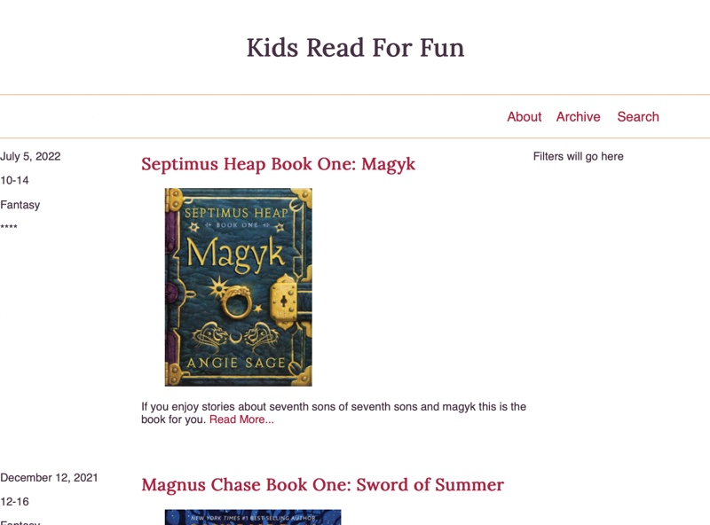

This week we will take the design for a simple blog site that you
developed in this week's
Design a Book Review Site
activity and build it with HTML and CSS.
Review the Wireframe.
For this activity we will be building a webpage for a book review
blog. Below you will find a wireframe, and a mockup that we will
use to guide us in this.
WireframeMockup
After reviewing the wireframe spend some time thinking about what
parts of the layout should be grouped together in HTML, and what
tags you might use to do that.
Notice that the Filters portion of the page is not complete in the
mockup. We will do that part later.
Write the HTML
Add a new directory called blog to your WDD130
directory. Add new index.html and
blog.css files inside that new directory. Then open the
main index.html for your site (the one at the root of
the WDD130 directory) and add a link to this new page
(blog/). Finally download this
javascript file and add
it to the blog/ directory with the others. This file
contains information you can use as you write the HTML about a
couple of books.
Next write the HTML you will need to display all of the content
from the wireframe. Make sure to keep semantics in mind. As well,
make sure to use elements to group related parts of the page
together.
When thinking about semantics, you should think in terms of the
parts of the page ie: lists, paragraphs, headlines, headers,
footers, etc. For example the navigation is made up of a list of
links right? So it would make sense to use the HTML element that
matches (<li>)
You can skip the filter form for now as we will learn about forms
in the next unit. Do leave a space for it though. Leave yourself a
note for now, something like
<p>Filter form will go here</p>
Choose some colors and a Font.
Spend a few minutes thinking about colors and fonts. Pick 2-3
colors you think would work well together. You can use a resource
like Coolors to
help with this.
Start your CSS by writing your general styles. Set the font family
for body and headlines, font sizes, colors, link styles, etc.
If you would like to match the colors and fonts in the mockup
instead of choosing your own they are listed below:
Gold color: #EFC69B
Red color: #AF1B3F
Dark color: #473144
Body font: Helvetica, Arial, sans-serif
Headline font: Lora, Impact, serif (Lora can be found on
Google Fonts.)
Add the CSS for the layout.
Using the CSS Grid that we studied this week, write the CSS to
apply the layout from the wireframe to your page.
There are 3 places where we will need to use simple grids.
For the navigation in the header
For the main body of the page to get the articles to appear on
the left and the box that will hold the filters on the right.
Inside of each article to get the details on the left and the
title, image, and description on the right.
We will do the first grid for the navigation together, then you
can finish the others on your own.
We need a 3 column grid for the navigation. We can use relative
units like fr or exact units (px). In
this case where we know how long each link will be and thus the
amount of space each needs, and because the menu is aligned to the
right side of the layout exact units will work better.
To create the grid for the navigation we need to look at the HTML
structure we used for the links and identify the Grid container
and the Grid Items. If your HTML looked similar to what is below:
What element would be the container and which elements the items?
What selector would you use to select the container?
Solution
Container would be the ul, the items would be the
li. For a selector you could use something like
nav > ul, OR you could add a class directly to the
UL and use that class for a selector. IE
<ul class="main-nav">, and then
.main-nav as the selector.
You may need to adjust this based on how close your HTML for the
navigation is to the code above.
Once you have identified your grid container, add the CSS rule to
turn on grid for that element and create 3 columns wide enough to
fit the text of the links (you may want to refer back to the
mockup above)
Your page should look similar to the screenshot below at this
point.
First Grid added
We have one more Grid related task for the navigation. The Grid
needs to be on the right side of the screen instead of the left.
This is easy to do with the Grid alignment tools. We can use
justify-content: end;, and
justify-items: end; to re-align it. We will learn
more about CSS Grid alignment in a later lesson, but if you want a
preview check out those properties in the
CSS Tricks Grid Guide
for some idea about how they work.
With the first Grid as a model you now should add the other two
grids to the page. One to take the article details and place them
to the left of the article content, and the other to place the
articles to the left of the box that will contain our filters. Add
the CSS to create those two grids.
You should follow the same process of identifying the Grid
Container and Grid Items first. If all of the elements you need to
be Grid Items do not share the same parent in the HTML, you may
need to change your HTML structure so that they do.
Finish styling the header
We got a start on the last step on styling the header, but it
still doesn't look like the mockup. We should finish it now. Refer
back often to the wireframe and mockup to make sure that you pay
attention to the spacing and alignment details.
I find it useful when approaching tasks like this to make a list
of steps to solve the problem. A list in this case might look
similar to the following:
Increase the size of the title of the page, center it, and add
some padding to match the spacing in the mockup.
Remove the bullets on the navigation list.
Add the lines above and below the navigation element. (border)
In the mockup it appears that the navigation links do not go all
the way to the right edge. Try setting a
max-width and centering the block by setting
margin: 0 auto;
It looks like the font size of the links is larger than the
normal font size. Make it so.
Increase the height of the navbar to match the mockup. (try
padding or line-height)
Once you have the header styled (and matching the mockup as
closely as you can) you are done for this week. We will finish the
styling for the articles next week. Your page should look similar
to below. (Your colors and fonts do not have to match the
screenshot)

End of Part one
Commit and push your work.
Commit your changes, then push them to GitHub. Wait a few minutes
then check to make sure they show on Github pages. If you need a
review on how to do this check out
github instructions. Start around step 3.
After verifying that your page updated, submit the URL to your
page in Ilearn. The URL will look something like this:
https://githubusername.github.io/wdd130/. Make sure to
replace "githubusername" with YOUR actual github username :)